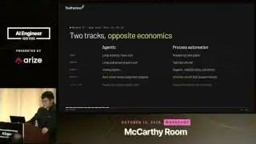
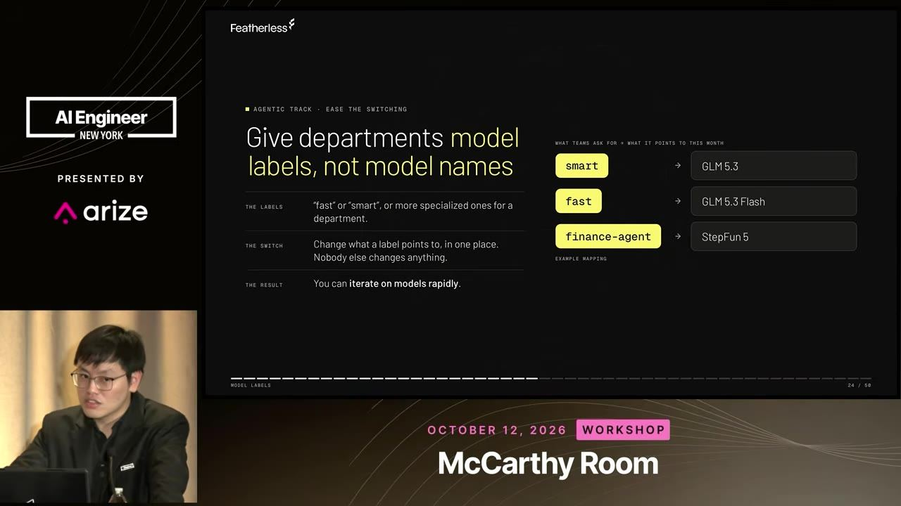
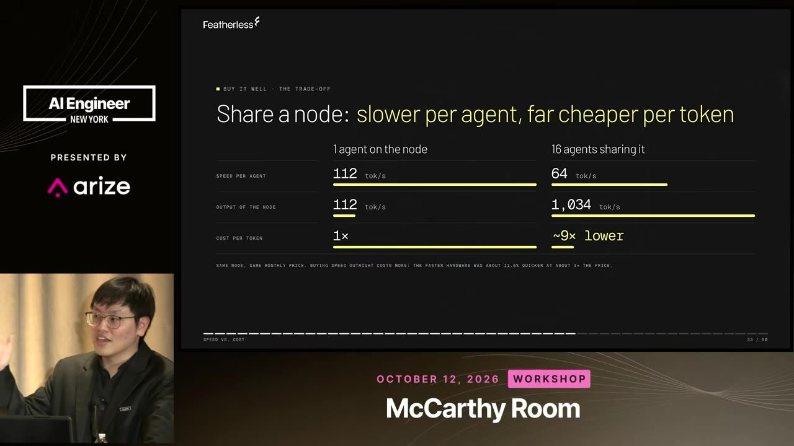
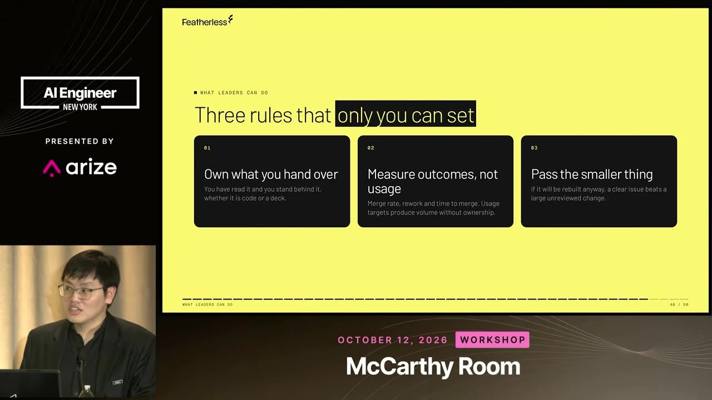

essencial do dia: Mostra os passos para cortar a conta de tokens, com casos em que ela caiu de 250 mil para 7,6 mil dólares por mês.
Tokenomics: como reduzir a conta de IA
The AI Bill Is Too Damn High: Tokenomics 101
Cortar a conta de tokens começa por medir, passa por escolher o modelo e a velocidade certos para cada tarefa e termina em revisar processos.
Depois deste talk você consegue aplicar os quatro passos para cortar custo de tokens, começando por separar chaves de API e medir o gasto
Em 3 frases
Eugene Cheah, da Featherless AI (empresa que vende inferência), propõe quatro passos para cortar o custo de IA em escala: medir, ajustar o tamanho do modelo, comprar capacidade de GPU com critério e revisar os processos.
Ele separa cargas agênticas (longas, com muito cache) de cargas de processo (alto volume, contexto curto), e mostra casos em que modelos abertos menores ou classificadores baratos substituíram modelos de fronteira com a conta caindo de US$ 250 mil para US$ 7,6 mil por mês.
Na parte final ele alerta que token gasto não é trabalho entregue: código e slides gerados em massa empurram a revisão para outra pessoa, e o dono de cada entrega precisa responder por ela.
Antes de ler
- Throughput vazão, tokens gerados por segundo analogia no glossário
- Model routing roteamento de modelos analogia no glossário
- Prompt caching cache de prompt analogia no glossário
- Open weights pesos abertos analogia no glossário
- Fine-tuning ajuste fino de um modelo analogia no glossário
- Destilação Distillation (destilação de modelo) analogia no glossário
Sem chave de API separada, não há como medir
Cheah pergunta à plateia quem sabe o gasto total, por departamento, por time e por caso de uso. A mão desce a cada nível. Entre 30% e 40% dos clientes que o procuram usam uma única chave compartilhada. Separar chaves por time e por uso é o primeiro passo e, segundo ele, onde está o maior retorno.
 (ampliar imagem)
(ampliar imagem)
Duas cargas, duas economias
Agentes de código rodam por muito tempo, reaproveitam contexto e geram só cerca de 1% de tokens de saída. Automações de processo (call center, filtro de mensagens, documentos) têm contexto curto e volume enorme. Cada uma pede medição e modelo próprios. Um time de 5 devs com 8 agentes contínuos gastava US$ 150 mil por mês no Opus e caiu para menos de US$ 10 mil com um modelo aberto.


(ampliar imagem)Dê rótulos de modelo aos times, não nomes
Finanças e suporte não sabem comparar modelos. A recomendação é oferecer rótulos como rápido, inteligente ou agente financeiro, e trocar o modelo por trás sem avisar ninguém. Isso permite dividir tráfego e testar. Para fazer o time migrar de verdade, o incentivo que funciona é velocidade, não preço: o modelo barato precisa ser mais rápido.


(ampliar imagem)Mais 2 ideias deste talk
Dobrar a velocidade custa o triplo
Pela regra de bolso do palestrante, cada 2x de velocidade por requisição custa 3x e o efeito se acumula. No exemplo com um nó de GPU, uma requisição sozinha roda a 112 tokens por segundo. Com 16 em paralelo, cada uma cai para cerca de metade, mas a saída total sobe cerca de 10x e o custo cai na mesma proporção. Agentes de fundo e CI não precisam de velocidade alta.


(ampliar imagem)Slop grenade e a fórmula de resultado
Gerar muito código, slide ou relatório e deixar a verificação para outro é o que ele chama de slop grenade (granada de lixo gerado). Em um caso, o revisor jogou fora o código do agente e refez à mão. A regra é cada pessoa assumir o que entrega e medir resultados, não uso. Ele cita a fórmula tokens vezes preço dividido por resultados realmente usados, e admite que é uma medida falha.


(ampliar imagem)O palestrante vende inferência e admite isso, então os casos de economia (US$ 250 mil para US$ 7,6 mil, US$ 150 mil para menos de US$ 10 mil) vêm de clientes dele, sem metodologia, sem medida de qualidade e sem comparação independente. A regra 2x de velocidade igual a 3x de custo é uma estimativa de bolso. A fórmula de resultado é apresentada como falha pelo próprio autor. A parte sobre processos, slop grenade e revisão vem de observação, sem dados.
Teste você mesmo
Responda de cabeça antes de abrir. Lembrar com esforço é o que fixa.
- lembrar Quais são os quatro passos para cortar o custo de IA propostos por Eugene Cheah?
Ver resposta
Medir, ajustar o tamanho do modelo, comprar capacidade de GPU com critério e revisar os processos. O primeiro passo exige chaves de API separadas por time e por caso de uso.
- aplicar Como você testaria um modelo mais barato numa tarefa do seu time sem arriscar a qualidade?
Ver resposta
Monte um eval pequeno com exemplos reais da tarefa, teste modelos mais baratos ou abertos e escolha o mais barato que passa na maioria dos casos. Use o modelo forte para planejar e revisar e um rápido para implementar.
- criticar Por que os casos de economia, como US$ 250 mil para US$ 7,6 mil por mês, merecem cautela?
Ver resposta
O palestrante vende inferência e os casos vêm de clientes dele, sem metodologia, sem medida de qualidade e sem comparação independente. A regra de que 2x de velocidade custa 3x é estimativa de bolso.
Eval barato para trocar de modelo
Você precisa de: Acesso a dois modelos, um forte e um mais barato, e 15 exemplos reais da sua tarefa
- Junte 15 exemplos reais de entrada e a resposta esperada para uma tarefa do seu trabalho.
- Rode os exemplos no modelo forte e no mais barato e marque cada saída como aceitável ou não.
- Anote o custo por 1.000 chamadas de cada modelo e calcule a economia.
Deu certo se: Você tem a taxa de aceitação e o custo dos dois modelos e uma decisão por escrito sobre qual passa na maioria dos casos.
O que fazer com isso
- Separe uma chave de API por time e por caso de uso e some o gasto mensal de cada uma antes de qualquer outra otimização.
- Monte um eval pequeno com exemplos reais da sua tarefa e teste modelos mais baratos ou abertos, começando pelo mais barato que passa na maioria dos casos.
- Use o modelo forte para planejar e revisar e um modelo rápido e barato para implementar, e dê a ele velocidade maior como incentivo de troca.
- Exija que quem gera código, slide ou relatório com IA assuma o conteúdo e entregue em partes pequenas e testadas, para não empurrar a revisão para o colega.
Conversa com outros talks
- Como a Optiver adota modelos novos no mesmo dia · 27 out · em comum: Golden dataset, Model routing, Prompt caching
- Treinar modelo próprio com os traces da empresa · 2 nov · em comum: Eval, Model routing, Prompt caching
- GLM-5.2 e os motivos para abrir os pesos · 27 set · em comum: Fine-tuning, Open weights